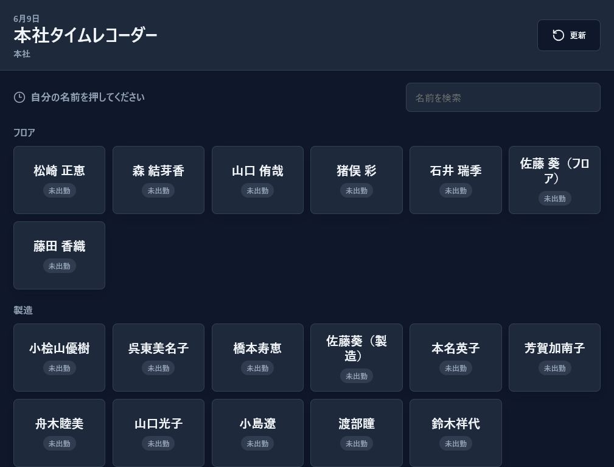
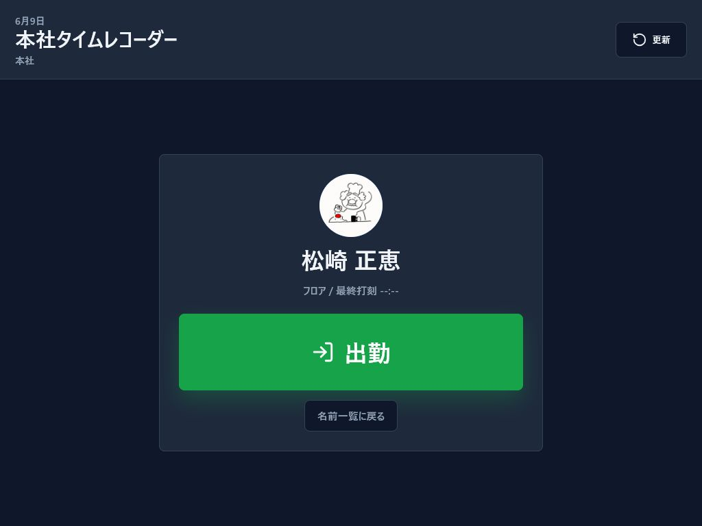

TS Groupware
勤怠タイムレコーダー運用マニュアル
本社・道の駅の専用端末で、スタッフ本人が自分の名前を押して出勤・退勤を記録するための運用手順です。
- 対象
- 本社・道の駅タイムレコーダー端末、TSG管理者、給与確認担当
- 方式
- 専用端末 / PINなし / 名前選択 / 管理者修正ログあり
- 更新日
- 2026年6月9日
1. 基本方針
- 打刻は原則として、本社・道の駅に設置した専用端末で行います。
- スタッフは自分の名前を押し、確認画面で出勤または退勤を押します。
- PIN入力は行いません。誤打刻は削除せず、管理者が無効化して履歴を残します。
- 給与閲覧・給与計算に進める権限は、佐藤正彦さん・佐藤ちさとさんの2名に限定します。
2. 専用端末の準備
- TSGに管理者でログインします。
- 下メニューの「管理」を開きます。
- 「勤怠」タブを開きます。
- 本社または道の駅の「端末URL」をコピーします。
- 設置する端末のブラウザでURLを開き、ホーム画面またはブックマークに登録します。
端末URLには端末キーが含まれます。通常スタッフに共有する必要はなく、設置端末だけで使います。
3. 出勤・退勤の手順
- 専用端末でタイムレコーダー画面を開きます。
- 自分の名前ボタンを押します。
- 表示された名前が自分であることを確認します。
- 出勤時は「出勤」、退勤時は「退勤」を押します。
- 完了メッセージが表示されたら打刻完了です。数秒後に名前一覧へ戻ります。
システムは直前の打刻から次に押すべきボタンを自動判定します。出勤済みの人には退勤、未出勤の人には出勤が表示されます。
4. 画面イメージ


5. 管理者の確認・修正
- TSGの「管理」を開きます。
- 「勤怠」タブを開きます。
- 日付を選び、当日の打刻ログを確認します。
- 誤打刻がある場合は「無効化」を押し、理由を入力します。
- 不足している打刻がある場合は、スタッフ・出勤/退勤・時刻・端末・メモを入力して追加します。
打刻ログは監査用に残します。誤打刻は物理削除ではなく無効化で処理します。
6. 権限
| 機能 | 利用できる人 |
|---|---|
| ユーザー管理 | TSG管理者 |
| グループ管理 | TSG管理者 |
| 勤怠確認・打刻修正 | TSG管理者 |
| 給与閲覧・給与計算 | 佐藤正彦さん、佐藤ちさとさん |
7. 日次運用チェック
- 朝: 専用端末がタイムレコーダー画面を表示しているか確認します。
- 昼: 端末がスリープやログアウトで止まっていないか確認します。
- 終業後: 管理画面の勤怠タブで未退勤・不自然な打刻を確認します。
- 月末: 管理者が誤打刻を修正し、給与担当が集計に進みます。
8. トラブル対応
| 状況 | 対応 |
|---|---|
| 名前が表示されない | 管理のユーザーで承認済みになっているか確認します。 |
| 間違えて他人の名前で押した | 管理者が該当打刻を無効化し、正しい打刻を手動追加します。 |
| 端末が動かない | ブラウザ更新、端末再起動、別端末で端末URLを開く順に確認します。 |
| 退勤ではなく出勤が出る | 前回の出勤打刻が無効化されている、または打刻漏れの可能性があります。管理画面でログを確認します。 |